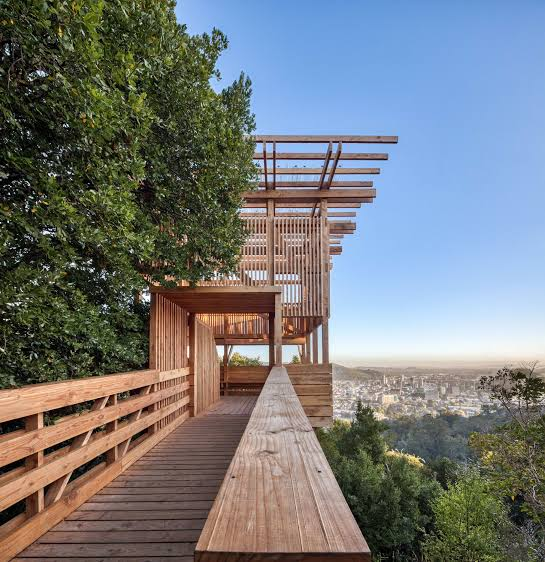
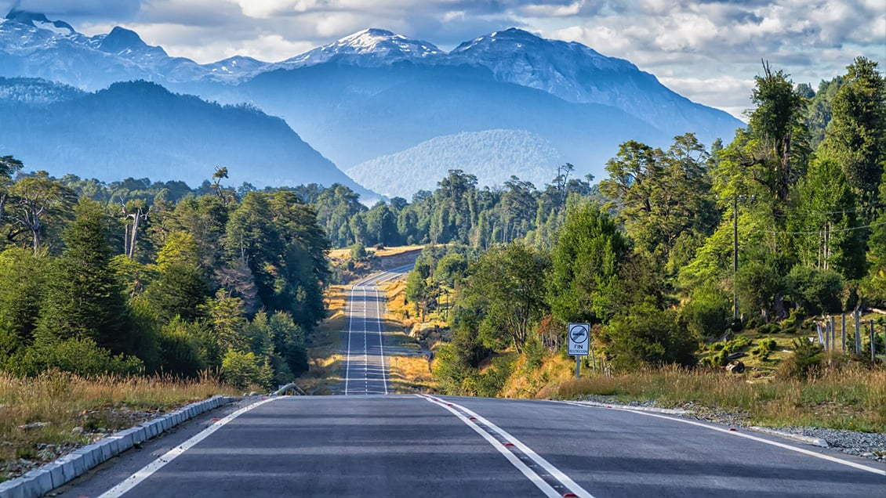
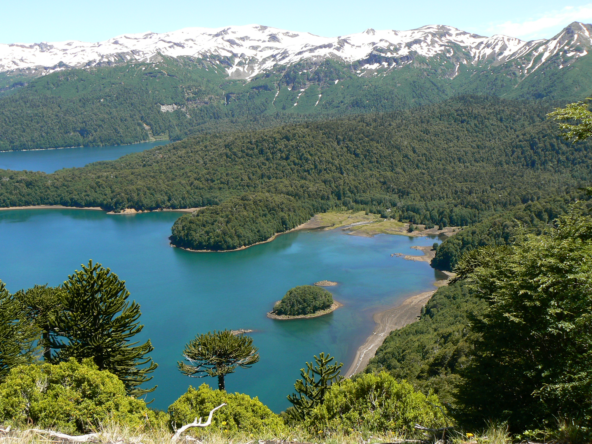
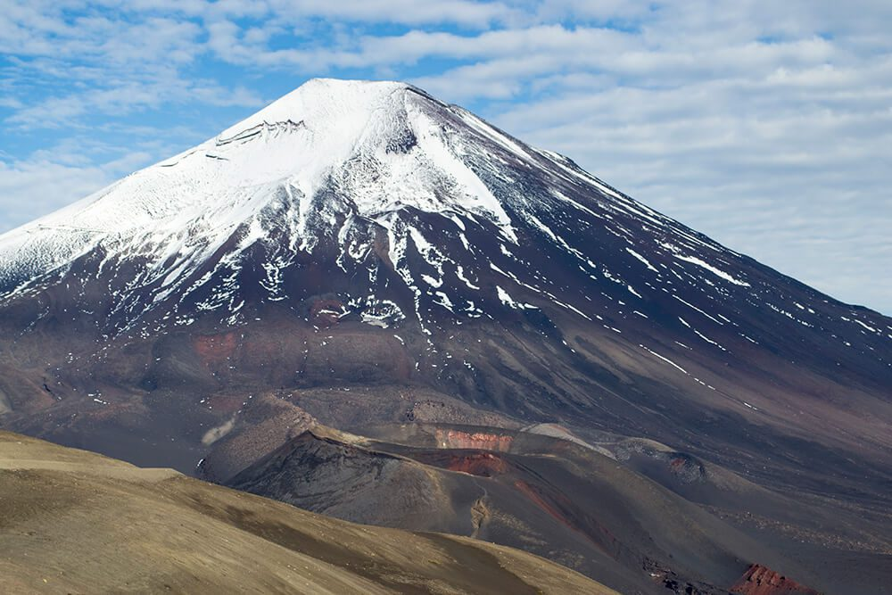
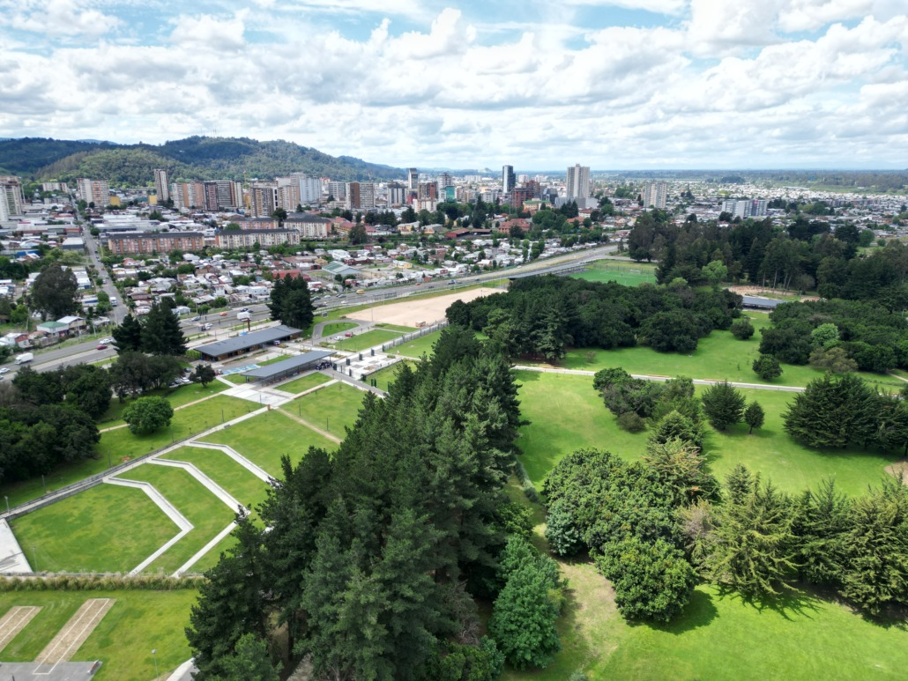
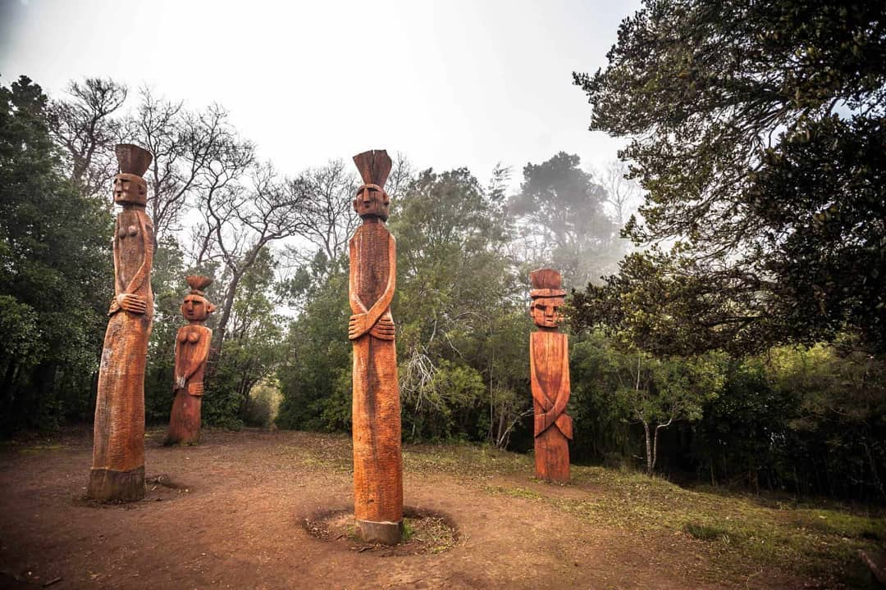
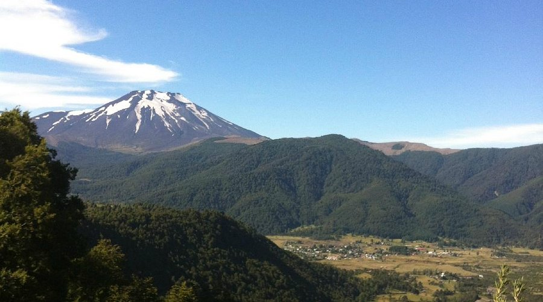

Cerro Ñielol
Disfruta de vistas panorámicas de la ciudad de Temuco desde este impresionante cerro.

Descubre las mejores rutas, senderos, parques naturales y atractivos de la zona
↓
Disfruta de vistas panorámicas de la ciudad de Temuco desde este impresionante cerro.

Disfruta de senderos rodeados de naturaleza y vistas panorámicas de la región.

Sendero exologico con flora y fauna nativa.

Espacio verde ideal para caminatas y actividades al aire libre.

Disfruta de la historia y la cultura de Temuco en este emblemático monumento.

Explora la belleza natural de la Reserva Nacional Malalcahuello, un destino ideal para los amantes de la naturaleza y el senderismo. Disfruta de sus paisajes impresionantes y su rica biodiversidad.